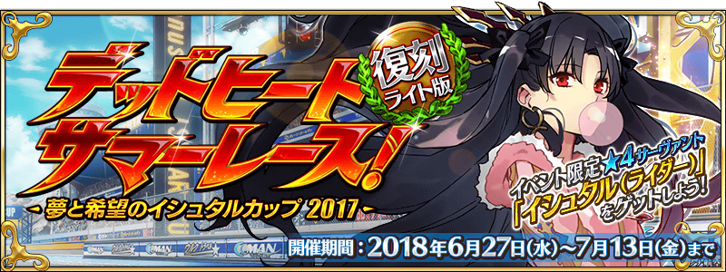
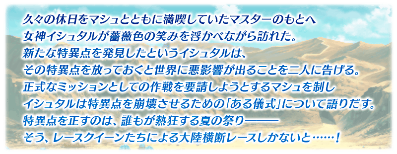
◆活動舉辦期間◆
2018年6月27日(三) 17:00～7月13日(五) 11:59
【7月3日(二) 17:00修正】
※7月10日(二) 23:00～7月11日(三) 6:00(預定)的期間將實施臨時維修。
臨時維修的實施時間變更至23:00～6:00(預定)。
關於實施時間的變更，抱歉帶給使用玩家的困擾。
由於維修中無法遊玩「Fate/Grand Order」，請在維修開始前結束關卡及戰鬥。
關於維修的詳情請自此處確認。
◆活動概要◆
舉辦期間限定活動「復刻:Dead Heat・夏日競賽！ ～夢與希望的伊絲塔盃2017～ 輕量版」！
本活動中，Servant們將組成隊伍，參加伊絲塔舉辦的競賽競爭名次。
從參加競賽的6組隊伍聲援想聲援的隊伍，引導隊伍到終點吧！
本活動為二部構成。
通過第一部主線關卡的話活動限定Servant「★4(SR)伊絲塔(Rider)」期間限定加入。
第二部預定自7月4日(三)開始。
想參加第二部條件為通過第一部的主線關卡。
第二部是新地圖，新的活動道具登場！
通過第二部主線關卡的話，「★4(SR)伊絲塔(Rider) 」會正式加入。
將第一部、第二部一起通過，將「★4(SR)伊絲塔(Rider)」的正式加入做為目標吧！
※本活動為再調整2017年舉辦的期間限定活動「Dead Heat・夏日競賽！ ～夢與希望的伊絲塔盃2017～」更容易遊玩的「復刻輕量版活動」。
◆活動參加條件◆
只限通過「特異點F 炎上汙染都市 冬木」的Master才能參加
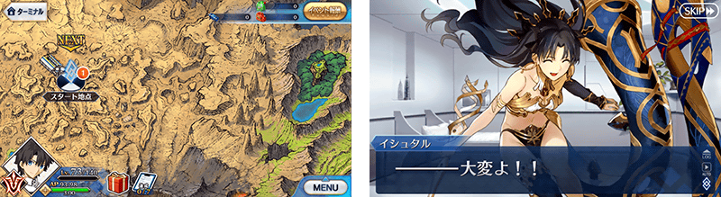
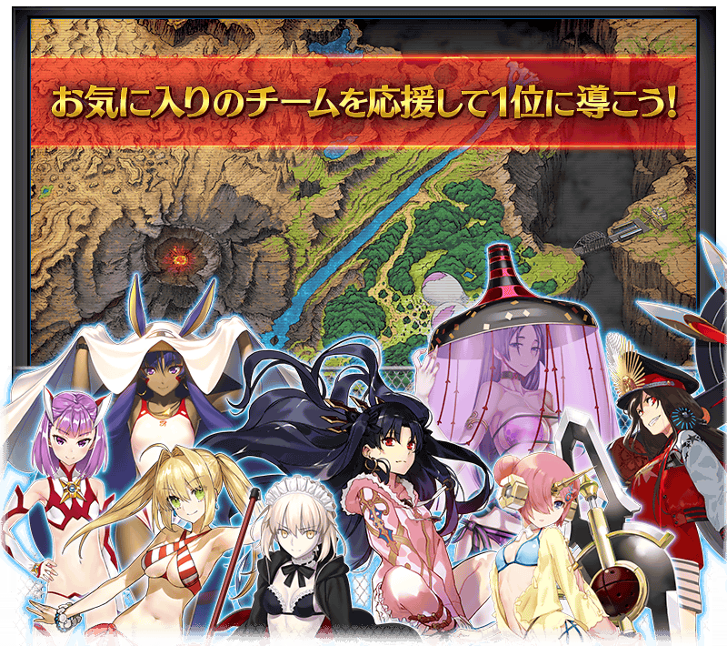
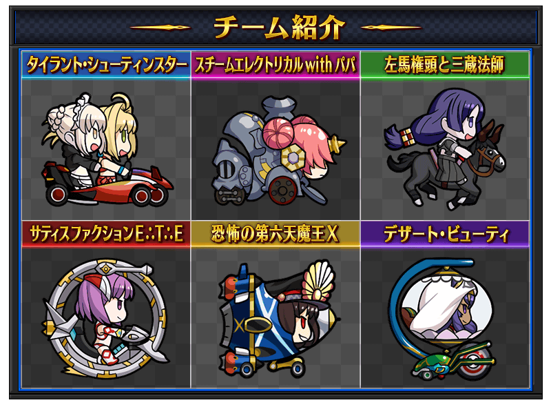
本活動隨著主線關卡的進行，會發生6隊競爭名次的「競賽聲援戰(レース応援戦)」。
通過任意想聲援隊伍的聲援戰關卡的話，會獲得「聲援點數(応援ポイント)」，讓該隊伍的競賽進行度上昇。
反覆喜愛的隊伍關卡提高競賽的進行度，使其比其他隊伍更快抵達終點吧！
各隊伍的競賽進行度會根據所有Master的聲援點數合計値來進行。
與其他Master同心協力聲援同樣隊伍，提高競賽進行度吧！
前3名隊伍抵達終點後，「競賽聲援戰」結束的話，可獲得「高排獲獎隊伍報酬」。
「競賽聲援戰」結束的話會結束現在参加中的ROUND，競賽會移動到下個ROUND。
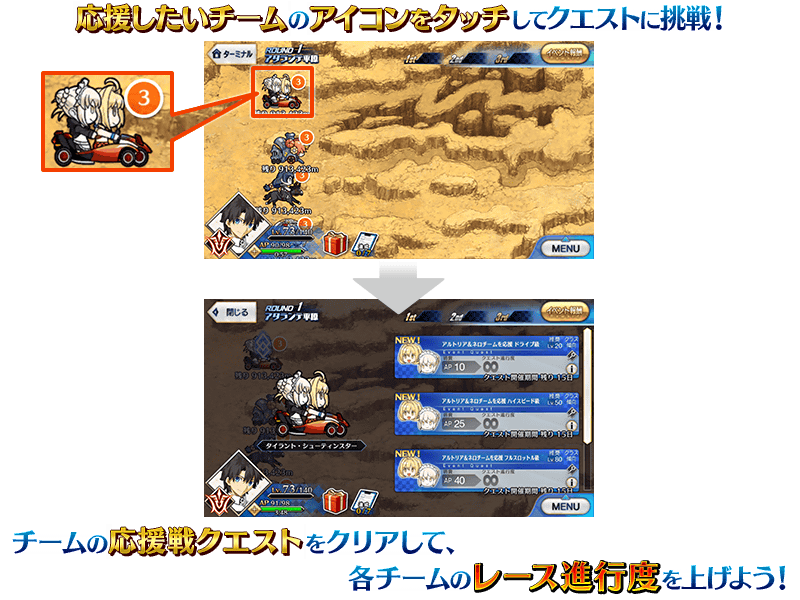
◆靠剩餘距離確認競賽的進行度！◆
競賽中在各隊伍的進行度會在隊伍圖示下方以「終點前的剩餘距離」顯示。
競賽陷入膠著狀態時，靠剩餘距離確認想聲援的隊伍吧！
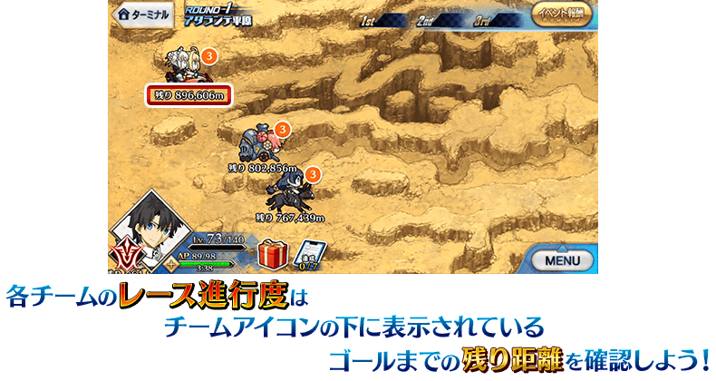
◆前3名隊伍到達終點後ROUND結束！◆
復刻前的活動是以「所有隊伍到達終點時間點」才結束競賽聲援戰的形式，復刻輕量版則是「前3位隊伍到達終點時間點」結束競賽聲援戰。
◆參加者全員得到高排獲獎隊伍報酬！◆
前3名隊伍到達終點的話，會顯示排名，競賽會移動到下個ROUND。
這時參加者全員皆可得到「高排獲獎隊伍報酬」。
各隊伍的「高排獲獎隊伍報酬」在參加各ROUND的「競賽聲援戰」後，可自管理室(ターミナル)畫面右上的「活動報酬」確認。
※「高排獲獎隊伍報酬」在「競賽聲援戰」結束後的活動舉辦期間內，通過該ROUND的主線關卡的話即可入手。
※「高排獲獎隊伍報酬」會在競賽結果結束領取後送至禮物箱。
◆獲取聲援點數得到QP！◆
聲援點數可在競賽舉辦中(前3名抵達終點前)通過各隊伍的聲援戰關卡來獲得。
聲援點數獲得的話，在ROUND結束後領取「高排獲獎隊伍報酬」時，可獲得「於該ROUND獲得的聲援點數合計對應量的QP」做為「聲援獎勵」。
跟聲援哪個隊伍、哪個隊伍得獎沒有關係。
通過更高難易度的關卡的情況和在關卡開始時使用推進道具的話，在關卡通過後給予的聲援點數會增加。
聲援點數在参加各ROUND的「競賽聲援戰」後，可自管理室(ターミナル)畫面右上的「活動報酬」確認。
◆關於主線關卡的進行◆
競賽中領先的隊伍到達一定進行度的話，在地圖內會出現新的地點。
通過選擇出現的地點時所顯示的關卡的話，會進行主線關卡。
※就算ROUND結束，未進行主線關卡的情況也無法進入下個ROUND。另外，請注意進入下個ROUND將無法回到前1個ROUND。
※請注意根據参加活動的時間點，會有「競賽聲援戰」結束的情況。在該情況不會影響主線關卡的進行，但無法執行聲援戰關卡。
※通過第一部的主線關卡後，在全體地圖會出現可收集活動道具的「整備資材集め」關卡。
※7月2日(一) 21:30 修正了關卡名稱。實際關卡內容並無變更。
| ROUND名 | 競賽聲援戰舉辦期間 |
|---|---|
| ROUND 1 阿塔蘭塔平原 | 6月27日(三) 17:00～ |
| ROUND 2 ？？？ | ROUND 1結束後 |
| ROUND 3 ？？？ | ROUND 2結束後 |
| ROUND 4 ？？？ | ROUND 3結束後 |
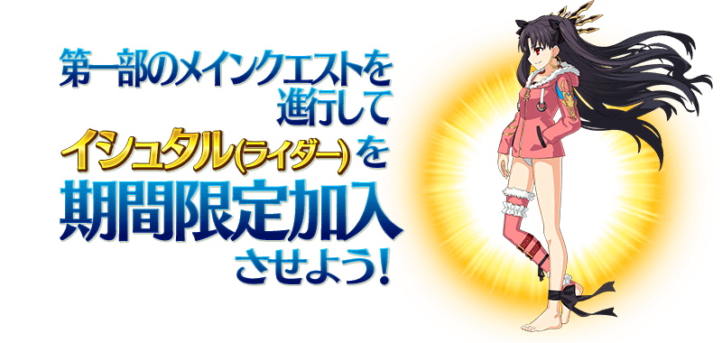
◆超值攻略方法・其1◆
在各隊伍的聲援戰關卡使用可在活動道具交換和關卡報酬等獲得的推進道具「Quick油」「Arts硝基」「Buster汽油」的話，會得到在戰鬥有利的效果。
推進道具，在關卡開始前，可任意選擇1種類使用。
※關卡中的推進道具效果對我方全體<含候補>都有作用，直到戰鬥結束都會持續。
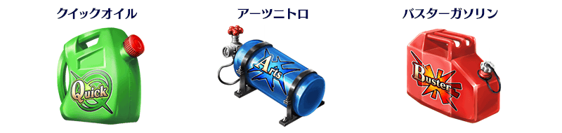
■使用推進道具讓獲得聲援點數提升！
另外使用推進道具通過聲援戰的話，可獲得比平常更多(2倍)的聲援點數。
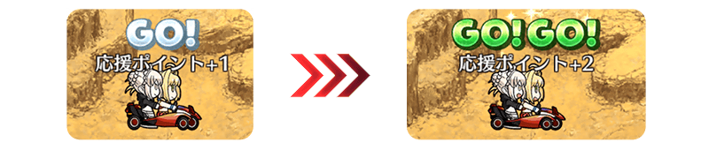
■配合相性更加提升！
各隊伍與推進道具有相性的話，相性良好可獲得更多(3倍)的聲援點數。
選擇各隊伍的聲援戰關卡後，在點擊關卡開始所顯示的推進道具選擇畫面各推進道具的聲援點數加成倍數。
顯示最高倍率也就是與該隊伍相性最好的推進道具。
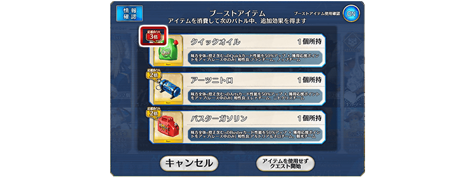
| 推進道具 | 隊伍名 |
|---|---|
| クイックオイル | スチームエレクトリカルwithパパ |
| 恐怖の第六天魔王Ｘ | |
| アーツニトロ | サティスファクションＥ∴Ｔ∴Ｅ |
| デザート･ビューティ | |
| バスターガソリン | タイラント･シューティンスター |
| 左馬権頭と三蔵法師 |
◆超值攻略方法・其2◆
對象Servant在期間限定活動「復刻:Dead Heat・夏日競賽！ ～夢與希望的伊絲塔盃2017～ 輕量版」的活動關卡中會提升活動専用道具「鎂製輪胎」「鈦合金板」「廢棄零件」的掉落獲得數。
※請注意各關卡的道具掉落率並非100％。
※自6月25日(一) 17:00，在Servant選擇畫面和Servant強化畫面等中，追加「下次活動對象」篩選器。
由於是只顯示於下個舉辦活動活躍Servant的便利功能，敬請活用。
以下的對象Servant會比其他對象Servant有更多的活動道具獲得數。
【對象Servant】
| 職階 | 稀有度 | Servant名 |
|---|---|---|
| Saber | ★★★★ | 弗蘭肯斯坦 |
| Archer | ★★★★ | 海倫娜・布拉瓦茨基 |
| Lancer | ★★★★ | 源賴光 |
| Rider | ★★★★★ | 阿爾托莉亞・潘德拉剛〔Alter〕 |
| ★★★★ | 伊絲塔 | |
| Caster | ★★★★★ | 尼祿・克勞狄烏斯 |
| Assassin | ★★★★ | 尼托克里絲 |
| Berserker | ★★★★ | 織田信長 |
【其他對象Servant】
| 職階 | 稀有度 | Servant名 |
|---|---|---|
| Archer | ★★★★★ | 阿爾托莉亞・潘德拉剛 |
| ★★★★★ | 俄里翁 | |
| ★★★★★ | 新宿的Archer | |
| ★★★★★ | 尼古拉・特斯拉 | |
| ★★★★ | 阿塔蘭塔 | |
| ★★★★ | 安妮・伯妮＆瑪莉・瑞德 | |
| Lancer | ★★★★★ | 玉藻前 |
| ★★★★ | 清姬 | |
| Rider | ★★★★ | 莫德雷德 |
| ★★★ | 布狄卡 | |
| Caster | ★★★★★ | 玄奘三藏 |
| ★★★★★ | 不夜城的Caster | |
| ★★★★ | 湯瑪斯・愛迪生 | |
| ★★★★ | 瑪莉・安東尼 | |
| ★★★ | 查爾斯・巴貝奇 | |
| Assassin | ★★★★★ | 謎之女主角X |
| ★★★★ | 斯卡哈 | |
| Berserker | ★★★★ | 黃金國的Berserker |
| Ruler | ★★★★ | 瑪爾大 |
※請注意在第一部與第二部做為對象的Servant會有一部份差異。
◆超值攻略方法・其3◆
裝備可靠活動道具交換入手的活動限定概念禮裝「★5(SSR)シーサイド・ラグジュアリー」的話，在期間限定活動「復刻:Dead Heat・夏日競賽！ ～夢與希望的伊絲塔盃2017～ 輕量版」中會提升活動専用道具「鎂製輪胎」「鈦合金板」「廢棄零件」的掉落獲得數。
※請注意各關卡的道具掉落率並非100％。
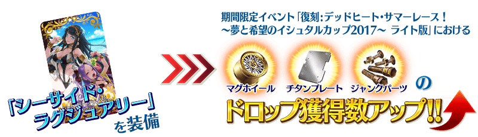
◆超值攻略方法・其4◆
裝備在聖晶石召喚Pick Up的期間限定概念禮裝「サマー・リトル」「ホワイト・クルージング」「シュガー・バケーション」的話，在期間限定活動期間限定活動「復刻:Dead Heat・夏日競賽！ ～夢與希望的伊絲塔盃2017～ 輕量版」中會提升活動専用道具「鎂製輪胎」「鈦合金板」「廢棄零件」各自的掉落獲得數。
※期間限定概念禮裝在第二部開始時也會追加第二部專用的活動道具掉落獲得數增加效果。
※請注意各關卡的道具掉落率並非100％。
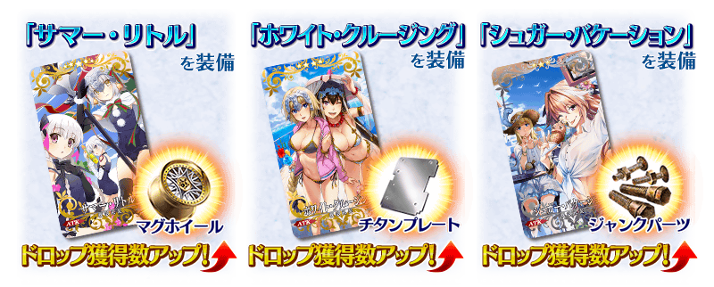
◆超值攻略方法・其5◆
在2017年舉辦的第二部聖晶石召喚Pick Up的「真夏のひと時」「キング･ジョーカー･ジャック」「カルデア･ビーチバレー」也會有第一部的活動道具獲得數提升的效果。
裝備的話，在期間限定活動「復刻:Dead Heat・夏日競賽！ ～夢與希望的伊絲塔盃2017～ 輕量版」中會提升活動専用道具「鎂製輪胎」「鈦合金板」「廢棄零件」各自的掉落獲得數。
※請注意各關卡的道具掉落率並非100％。
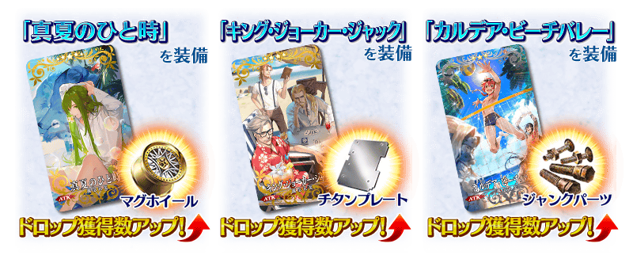
| 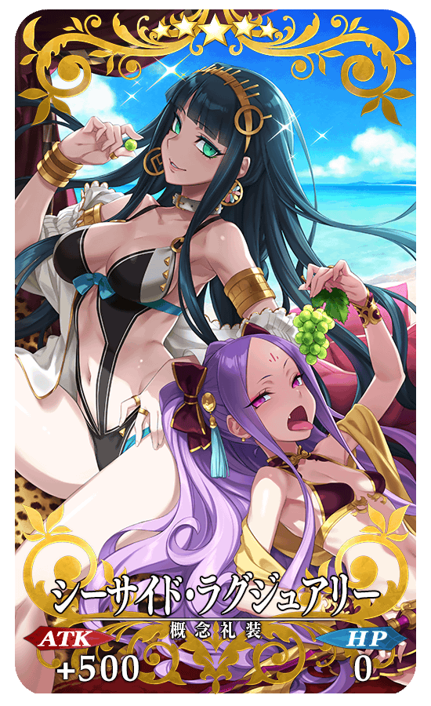 |
★★★★★SSR |
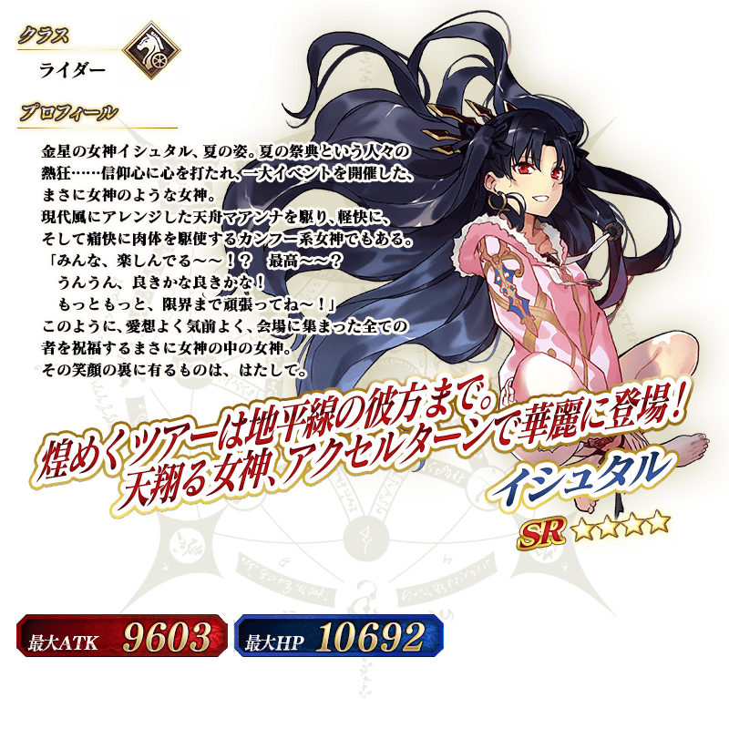
◆靈基再臨◆
使用在活動期間中靠活動道具交換外無法入手的「黄金の葦」的話，重複4次靈基再臨的話，卡面會有所變化！
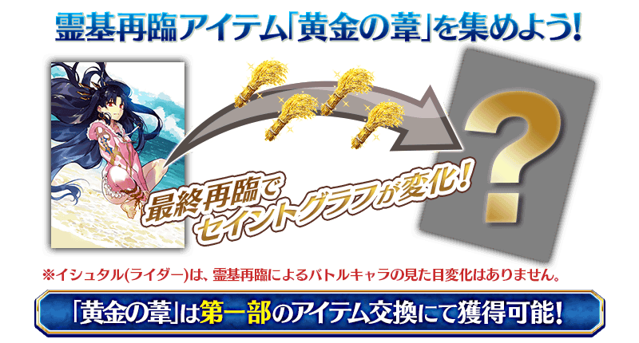
※伊絲塔(Rider)在第一部通過後期間限定加入，第二部通過後正式加入。 靈基再臨需要活動限定的専用靈基再臨道具「黄金の葦」。
寶具等級提升的詳情會在第二部相關的公告記載。
介紹伊絲塔(Rider)的寶具演出！
在「Fate/Grand Order」官方網站內的公告中，公開了「★4(SR)伊絲塔(Rider)」的寶具演出。敬請確認。
◆交換方法◆
交換期間:2018年6月27日(三) 17:00～7月20日(五) 11:59
※交換期間結束後「鎂製輪胎」「鈦合金板」「廢棄零件」「Quick油」「Arts硝基」「Buster汽油」會消失。
活動専用道具可自點擊管理室(ターミナル)畫面右上「活動報酬」的「活動道具交換」畫面，交換以下的道具。
※英靈結晶・流星之芙芙ALL★4(HP)、英靈結晶・日輪之芙芙ALL★4(ATK)的交換會在通過期間限定活動「復刻:Dead Heat・夏日競賽！ ～夢與希望的伊絲塔盃2017～ 輕量版」主線關卡後開放。
◆能用鎂製輪胎交換的道具◆
| 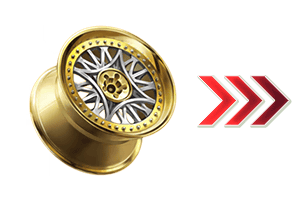 |
【活動限定概念禮裝】
【活動限定靈基再臨素材】 【技能強化＆靈基再臨素材】 【靈基再臨素材】 【其他道具】 |
◆能用鈦合金板交換的道具◆
| 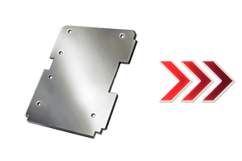 |
【活動限定概念禮裝】
【活動限定靈基再臨素材】 【技能強化＆靈基再臨素材】 【靈基再臨素材】 【其他道具】 |
◆能用廢棄零件交換的道具◆
| 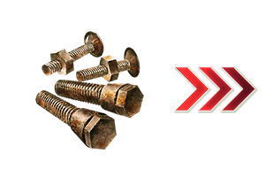 |
【活動限定概念禮裝】
【活動限定靈基再臨素材】 【技能強化＆靈基再臨素材】 【其他道具】 |
◆能用Quick油・Arts硝基・Buster汽油交換的道具◆
※在活動舉辦期間結束後才能交換。
|
【其他道具】 |
以通過期間限定活動「復刻:Dead Heat・夏日競賽！ ～夢與希望的伊絲塔盃2017～ 輕量版」主線關卡及「終局特異點」的Master為對象開放高難易度的「挑戰關卡」。
「挑戰關卡」就算通過後也不會消失，能無數次挑戰，可以變更Servant和概念禮裝的組合後再次挑戰。
※關卡通過報酬、戰利品、Master經驗值、魔術禮裝經驗值、絆點數只可在初次通過時獲得。
◆挑戰關卡參加條件◆
只限通過期間限定活動「復刻:Dead Heat・夏日競賽！ ～夢與希望的伊絲塔盃2017～ 輕量版」主線關卡及「終局特異點」的Master才能參加
◆挑戰關卡初次通過報酬◆
傳承結晶 1個
在Fate/Grand Order官方網站內首頁及Gallery，公開期間限定活動「復刻:Dead Heat・夏日競賽！ ～夢與希望的伊絲塔盃2017～ 輕量版」的電視廣告。敬請確認。
以期間限定在達文西工房的「魔力稜鏡交換」追加下述道具。
|
◆交換期間◆ |
| 追加道具 | 能交換 次數 |
1次交換所需的 魔力稜鏡數 |
|---|---|---|
| 【期間限定】叡智的猛火 ALL★4(SR)10張組 |
10次 | 20個 |
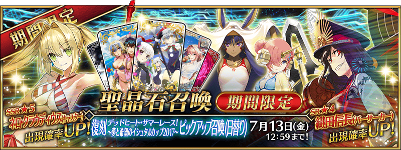
◆「復刻 Dead Heat・夏日競賽！ ～夢與希望的伊絲塔盃2017～Pick Up召喚(每日交替)」期間◆
期間:2018年6月27日(三) 17:00～7月13日(五) 11:59
舉辦期間限定「復刻 Dead Heat・夏日競賽！ ～夢與希望的伊絲塔盃2017～Pick Up召喚(每日交替)」！
身穿適合夏日服裝的Servant「★5(SSR)尼祿・克勞狄烏斯(Caster)」「★4(SR)弗蘭肯斯坦(Saber)」「★4(SR)尼托克里絲(Assassin)」「★4(SR)織田信長(Berserker)」以期間限定登場！
變更在2017年舉辦的「Dead Heat・夏日競賽！ ～夢與希望的伊絲塔盃2017～Pick Up召喚」一部份內容進行復刻。
「★4(SR)弗蘭肯斯坦(Saber)」「★4(SR)尼托克里絲(Assassin)」「★4(SR)織田信長(Berserker)」以每日交替Pick Up，「★5(SSR)尼祿・克勞狄烏斯(Caster)」常駐Pick Up！
※尼祿・克勞狄烏斯(Caster)、弗蘭肯斯坦(Saber)、尼托克里絲(Assassin)、織田信長(Berserker)在Pick Up期間結束後不會追加到故事召喚。
詳情請在聖晶石召喚畫面左下的召喚詳細確認。
裝備期間限定概念禮裝「★5(SSR)サマー・リトル」「★4(SR)ホワイト・クルージング」「★3(R)シュガー・バケーション」的話在期間限定活動「復刻:Dead Heat・夏日競賽！ ～夢與希望的伊絲塔盃2017～ 輕量版」中會提升活動専用道具的掉落獲得數。
※「★3(R)シュガー・バケーション」在Pick Up期間中，也能在友情點數召喚獲得。
※請注意自友情點數召喚抽出「★3(R)シュガー・バケーション」在自動變還設定登錄★3(R)概念禮裝的情況，會變成自動變還的對象。
※可在「復刻 Dead Heat・夏日競賽！ ～夢與希望的伊絲塔盃2017～Pick Up召喚(每日交替)」獲得的期間限定概念禮裝預定在第二部開始後，賦予對應第二部的活動道具的效果。
詳情會在第二部相關的公告記載。
Pick Up期間中，期間限定Servant、期間限定概念禮裝的出現機率提升！
10次召喚中確定1張★4(SR)以上和確定1位★3(R)以上的Servant！
※確定★4(SR)以上包含Servant和概念禮裝。
| 每日交替Pick Up期間 | 每日交替Pick Up內容 |
|---|---|
| 6月27日(三) 17:00～ 6月29日(五) 22:59 |
尼祿・克勞狄烏斯(Caster) 弗蘭肯斯坦(Saber) 尼托克里絲(Assassin) 織田信長(Berserker) |
| 6月29日(五) 23:00～6月30日(六) 22:59 | 尼祿・克勞狄烏斯(Caster) 弗蘭肯斯坦(Saber) |
| 6月30日(六) 23:00～7月1日(日) 22:59 | 尼祿・克勞狄烏斯(Caster) 尼托克里絲(Assassin) |
| 7月1日(日) 23:00～7月2日(一) 22:59 | 尼祿・克勞狄烏斯(Caster) 織田信長(Berserker) |
| 7月2日(一) 23:00～ 7月5日(四) 22:59 |
尼祿・克勞狄烏斯(Caster) 弗蘭肯斯坦(Saber) 尼托克里絲(Assassin) 織田信長(Berserker) |
| 7月5日(四) 23:00～ 7月7日(六) 22:59 |
尼祿・克勞狄烏斯(Caster) 弗蘭肯斯坦(Saber) |
| 7月7日(六) 23:00～ 7月9日(一) 22:59 |
尼祿・克勞狄烏斯(Caster) 尼托克里絲(Assassin) |
| 7月9日(一) 23:00～ 7月11日(三) 22:59 |
尼祿・克勞狄烏斯(Caster) 織田信長(Berserker) |
| 7月11日(三) 23:00～ 7月13日(五) 11:59 |
尼祿・克勞狄烏斯(Caster) 弗蘭肯斯坦(Saber) 尼托克里絲(Assassin) 織田信長(Berserker) |
※請注意會以每日交替變更Pick Up的Servant。
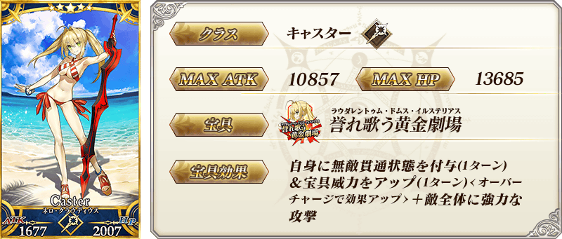
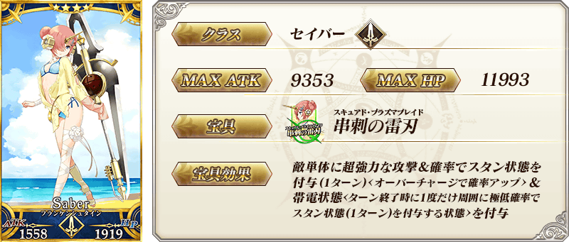
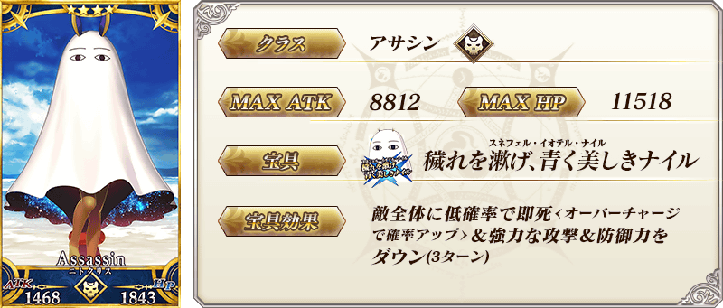
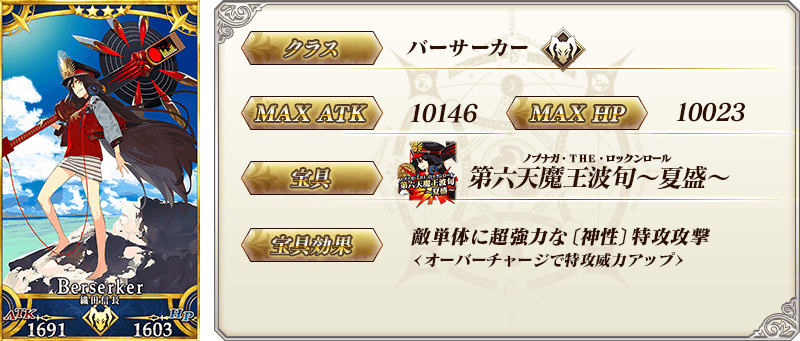
 |
★★★★★SSR |
| 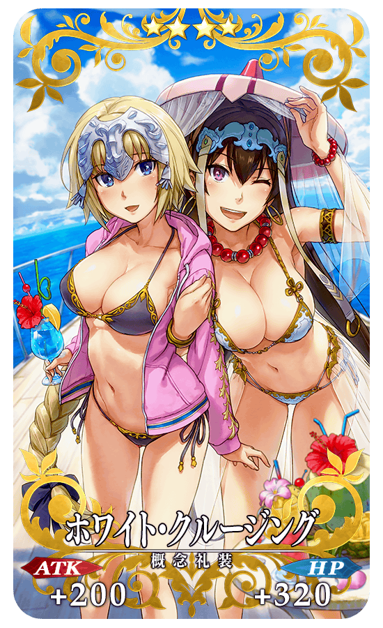 |
★★★★SR |
| 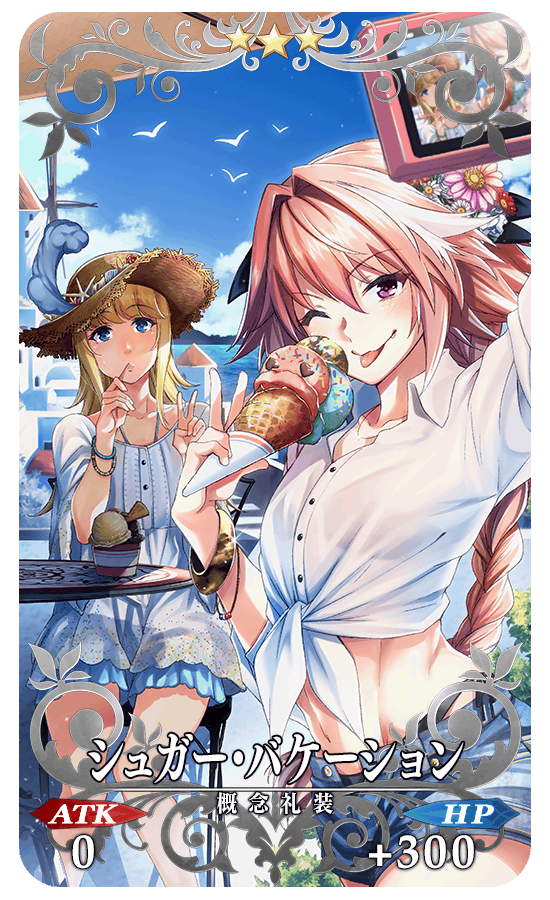 |
★★★R |
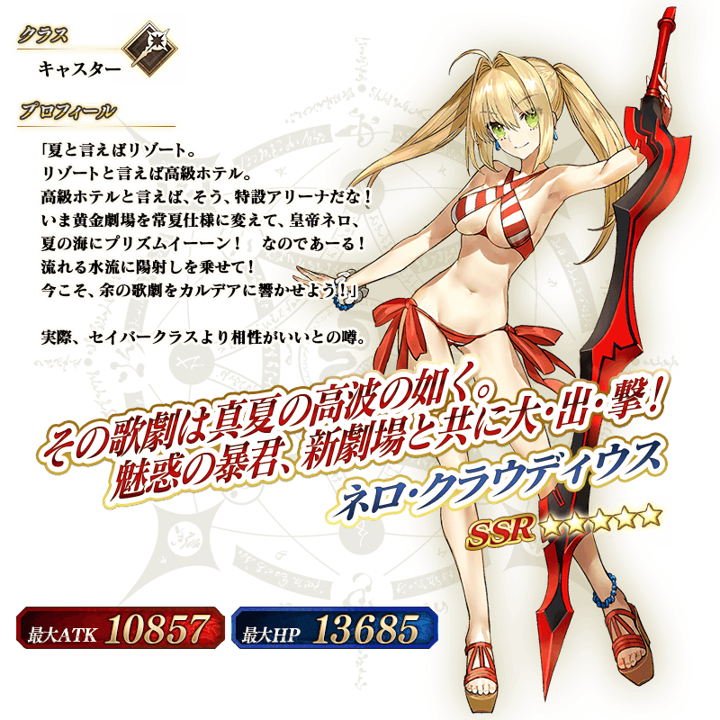
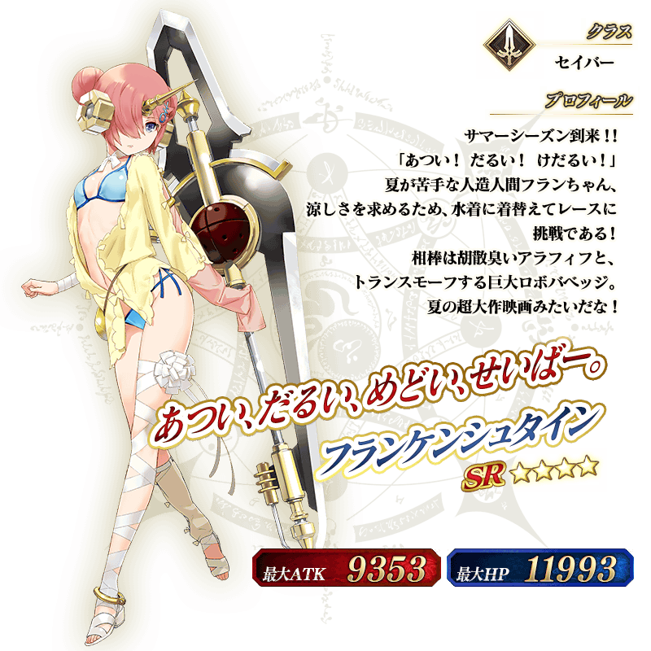
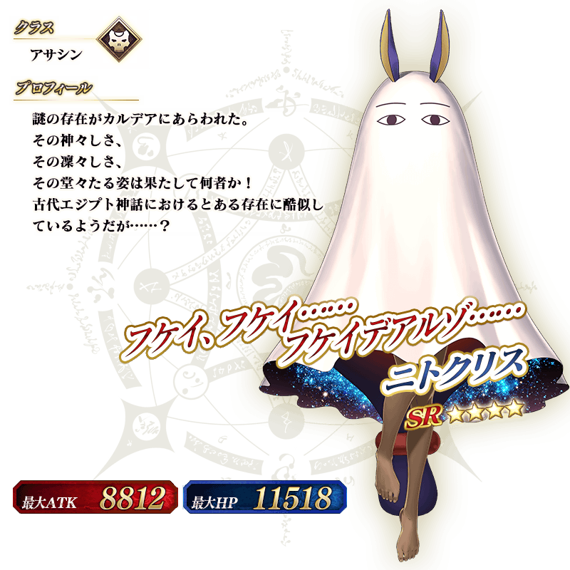
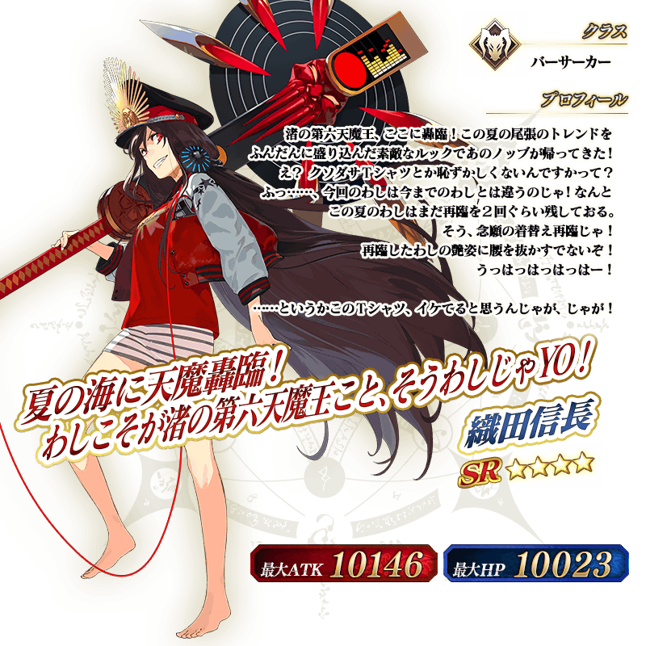
介紹尼祿・克勞狄烏斯(Caster)、弗蘭肯斯坦(Saber)、尼托克里絲(Assassin)、織田信長(Berserker)的寶具演出！
在「Fate/Grand Order」官方網站內的公告中，公開了「★5(SSR)尼祿・克勞狄烏斯(Caster)」「★4(SR)弗蘭肯斯坦(Saber)」「★4(SR)尼托克里絲(Assassin)」「★4(SR)織田信長(Berserker)」的寶具演出。敬請確認。